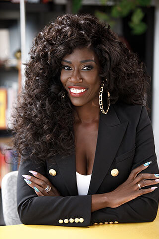

Bozoma Saint John-Watson is a Ghanaian-American businesswoman with significant industry leadership experience. Her significant leadership experience includes serving as chief marketing officer at Netflix, chief brand officer at Uber, and chief marketing officer at Endeavor. She strongly differs from other big tech leaders due to her work in advocacy and activism while in her roles.
The tech industry, especially in the United States, is traditionally composed of majority White males. Saint John-Watson undeniably contradicts this trend of the modern times. As a Ghanaian-American woman, she has risen to the top of leadership roles in some of the world's largest companies. In the process, she has faced adversity like stereotypes and pressure to fit in with people of different backgrounds, beliefs, and cultures.
Saint John-Watson has consistently used her leadership positions to speak out about racial inequality and representation. She believes business leaders have a responsibility to make their personal beliefs visible through their work instead of simply “hiding behind logos.” She has also pushed for greater diversity through storytelling and culture, helping show different Black experiences while advocating for more Black women in major leadership roles.